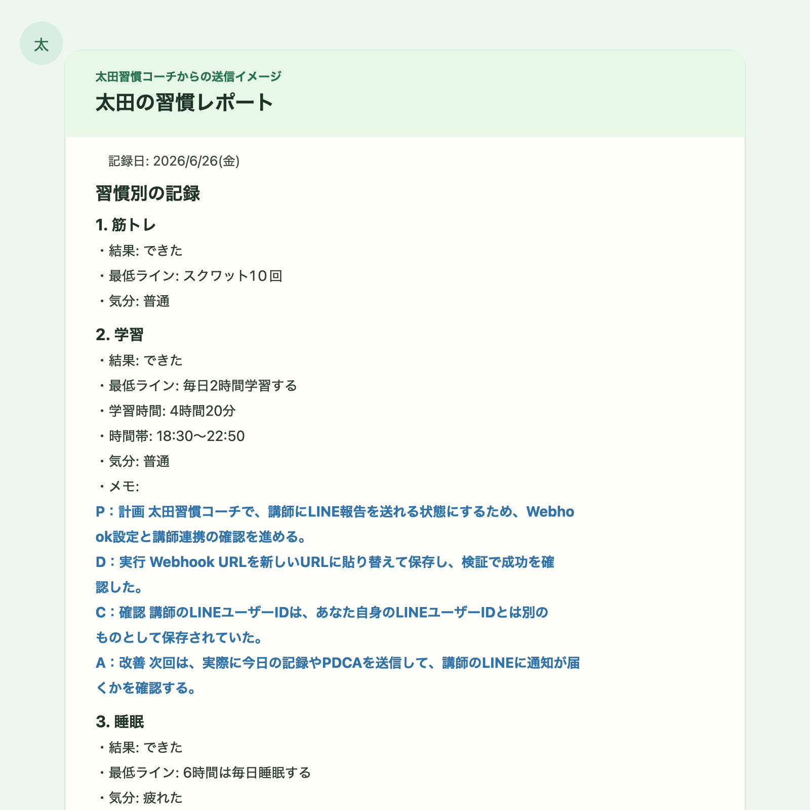

働き方を変える
Web制作やプログラミングの学習を通して、将来の選択肢を広げ、市場価値の高い人材を目指したいです。
Tetsuya Ota Profile
小樽で育った経験を土台に、介護の現場で学んだ気配りをWeb制作にも活かしていきたいです。
介護の現場で23年、人と向き合ってきた経験を活かし、Web制作とプログラミングを学習中。
北海道小樽市出身です。大原簿記専門学校 札幌校を卒業し、現在はWeb制作やプログラミングを学んでいます。
| 学校 | 大原簿記専門学校 札幌校 卒業 |
|---|---|
| 出身 | 北海道小樽市 |
| 資格 | 簿記2級、電卓検定2級、普通自動車第一種免許、介護福祉士、介護支援専門員 |
| 趣味 | 映画鑑賞、音楽鑑賞、ゲーム、野球、野球観戦、旅行、海外旅行 |
| ゲーム | FPSゲーム、レトロゲーム |
| 野球観戦 | プロ野球、メジャーリーグ |
介護の現場で、相手が何を考えているのかを想像しながら関わることを大切にしてきました。
声かけや送迎、レクリエーションなどを通して、安心してもらえる関わりを意識してきました。
40代からプログラミングを学び、これまでの経験を新しい分野でも活かせるように挑戦しています。
はじめまして。太田鉄也です。北海道小樽市出身で、大原簿記専門学校 札幌校を卒業しました。 小樽で過ごした時間や学生時代の経験は、今の自分の土台になっています。
学生時代は小学校3年生から高校3年生まで野球を続け、高校では硬式野球部でファーストを守っていました。 野球を通して、続けること、チームで動くこと、最後まで諦めないことを学びました。
その後は介護の仕事に進み、約23年間、利用者さんやご家族と向き合ってきました。 相手が何を感じ、何に困っているのかを考えながら声をかけることを大切にしてきました。
現在は、これからの人生をより良くするために、Web制作やプログラミングを学んでいます。 介護経験で身につけた気配りや観察力を、使う人にとってわかりやすい画面作りに活かしていきたいです。
| 出身 | 北海道小樽市 |
|---|---|
| 学歴 | 大原簿記専門学校 札幌校 卒業 |
| 資格 | 簿記2級、電卓検定2級、普通自動車第一種免許、介護福祉士、介護支援専門員 |
| 介護職 | 介護の仕事には、トータルで約23年間携わっています。 デイケアサービスで約5年間勤務しました。 その後、介護福祉士に合格し、グループホーム、小規模多機能型施設、老人保健施設などで経験を積みました。 |
| ケアマネ | 介護支援専門員に合格後、約10年間ケアマネジャーとして従事しています。 介護の現場と相談支援の経験を通して、人と向き合うことの大切さを学んできました。 |
| 仕事で学んだこと | 利用者さんから「ありがとう」と言われたときに、大きなやりがいを感じてきました。 認知症の方と関わる中では、こちらの考えを押し付けるのではなく、相手が何を考えているのかを想像しながら対応することを大切にしてきました。 |
| 強み | 相手の立場で物事を考え、気配りをしながら行動することです。 レクリエーションや送迎、拒否のある方への声かけなどでも、利用者さんに安心してもらえる関わりを意識してきました。 |
| 転機 | 40代に入り、これからの人生を考える中で「今のままで本当にいいのか」と感じるようになりました。 YouTubeでプログラミングの動画を見たことをきっかけに、新しいことへ挑戦し、Web制作やプログラミングを学ぶようになりました。 |
| 野球経験 | 小学校3年生から高校3年生まで野球を経験。高校時代は硬式野球部で、ポジションはファースト。 |
介護の仕事を長く続け、介護支援専門員としても働いてきました。 利用者さんやご家族と向き合う仕事にやりがいを感じる一方で、40代に入り、これからの働き方や成長について考えるようになりました。
10年後、20年後に自分の人生を振り返ったとき、「あのとき挑戦しておけばよかった」と後悔したくありません。 これまでの経験があるからこそ、今度は途中で諦めず、学んだことを形にしたいと考えています。
プログラミングを学ぶ理由は、将来の選択肢を広げるためです。 ただ技術を覚えるだけではなく、使う人にとってわかりやすく、役に立つものを作れる人を目指しています。
特に、介護の現場で働く人を支えるソフト開発や、業務改善につながるサービス作りに関心があります。 現場で感じてきた不便さを、これからの学習や制作に活かしていきたいです。
Web制作やプログラミングの学習を通して、将来の選択肢を広げ、市場価値の高い人材を目指したいです。
約23年の介護経験を活かし、将来的には介護の現場を支えるソフト開発にも挑戦したいです。
国内外のさまざまな土地を訪れ、いつかフィンランドでオーロラを見ることも目標の一つです。
これまでの経歴は、決して順調なことばかりではありませんでした。 それでも、ありのままの自分を受け止めながら、素直に学び続ける姿勢を大切にしたいです。
Webページがどのように作られているのかを理解するために、まずは基本となるHTML、CSS、JavaScriptを中心に学んでいます。 まだ学習中ですが、少しずつ「読むだけ」ではなく「自分で作って試す」ことを大切にしています。
文章、見出し、画像、表など、ページの内容を組み立てるための言語として学んでいます。
色、余白、文字の大きさ、スマートフォン対応など、見やすい画面に整える方法を学んでいます。
タブの切り替えやボタン操作など、ページに動きをつけるための基本を学んでいます。
作ったファイルを記録し、変更の履歴を残しながら制作を進める方法を学んでいます。
Web制作やプログラミングの学習では、プロアカのYouTube動画を参考にしながら、 HTML・CSS・JavaScriptの基礎やReact、実際に手を動かして作る流れを学んでいます。
プロアカ YouTubeチャンネルを見る参考にしている学習コンテンツとして紹介しています。公式な所属や公認を示すものではありません。
介護の現場では、記録、情報共有、予定調整、家族や関係機関との連絡など、 利用者さんと向き合う時間以外にも多くの業務があります。 そうした現場の負担を少しでも減らし、働く人が利用者さんに向き合う時間を増やせるような仕組みに関心があります。
日々の記録を入力しやすく、あとから確認しやすい形に整理できるツールを作ってみたいです。
申し送りや利用者さんの変化を、職員同士でわかりやすく共有できる仕組みに関心があります。
通院、面談、サービス調整、書類作成などの予定を整理し、抜けや漏れを減らせる画面を考えたいです。
自分の経歴、強み、趣味、学習目標を1ページにまとめた自己紹介サイトです。 HTMLで内容を作り、CSSで見た目を整え、JavaScriptでタブ切り替えとページ上部へ戻るボタンを実装しました。
作成したプロフィールサイトをGitHubに管理し、GitHub Pagesで公開しました。 PCだけでなくスマートフォンでも見やすいように、公開後の表示確認と微調整も行っています。

筋トレ、学習、睡眠を毎日続けるための記録アプリです。 「できた」だけではなく「少しできた」日も記録し、続けることを支える画面を目指して作りました。 LINE報告や履歴確認、スマートフォンでの使いやすさも意識しています。
今後は、アプリの公開URLを追加し、実際にどのように使えるかまで伝わる形にしていきます。 制作物が増えたら、目的・機能・工夫した点を同じ形で整理して掲載します。
初めて見る人にも、自分がどのような経験をしてきたのか、今なぜプログラミングを学んでいるのかが伝わるように意識しました。 文章をただ並べるだけではなく、プロフィール、経歴、学習目標、好きなことに分けることで、読みたい情報を探しやすくしています。
工夫した点は、介護の経験とこれから学びたいITの分野をつなげて説明したことです。 「人と向き合ってきた経験」を、今後は「使う人にとってわかりやすい画面作り」に活かしていきたいと考えています。
| 制作 | プロフィールホームページを制作。 HTMLとCSSを使い、自分の経歴・趣味・写真を掲載した自己紹介ページを作成しました。 |
|---|---|
| 学習中 | プログラミングやWeb制作を学習中です。 自分の人となりが伝わるページ作りを目標にしています。 |
| 今後 | JavaScriptを使った動きのあるページや、映画・音楽・ゲーム・野球・旅行など、 自分の好きなことを紹介できるサイト制作にも挑戦したいです。 |
映画が好きになったきっかけは、ジャッキー・チェンのカンフー映画や「ターミネーター」です。 アクション、SF、ヒューマンドラマなど幅広く観ますが、特にスピード感のある作品が好きです。
音楽はJ-POP、韓国の音楽、洋楽まで幅広く聴きます。 R&B、ヒップホップ、ロックなど、ジャンルを決めすぎず、その時の気分に合う曲を楽しんでいます。
FPSではPUBGが好きで、仲間とチームを組み、オンラインで協力しながら遊ぶ時間が楽しいです。 レトロゲームでは、くにおくんシリーズ、グラディウス、ドラゴンクエストシリーズが印象に残っています。
野球は小学校3年生から高校3年生まで続け、高校時代は硬式野球部でファーストを守っていました。 今は観戦が中心で、日本ハムやメジャーリーグにも注目しています。 一つのプレーで流れが変わるところに、野球の面白さを感じます。
海外ではフィリピンやグアムに行った経験があります。 日本とは違う街の雰囲気や価値観に触れたことが、自分の視野を広げるきっかけになりました。 これからも国内外のいろいろな場所を訪れてみたいです。
このページは、学習成果とプロフィールを伝えるために公開しています。 個人の連絡先やSNSは、プライバシー保護のため掲載していません。共有するときは、下のボタンまたはQRコードから確認できます。